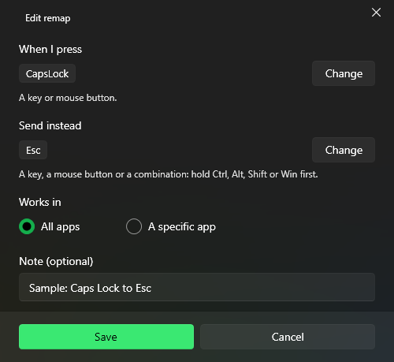

Press a key or mouse button and PuppyMacro sends another one instead. Remaps work while PuppyMacro is running, also in the system tray. Select Add remap on the Remap page.

Caps Lock sends Esc in all apps.
When I press: a key or mouse button.
Send instead: a key, a mouse button or a combination (hold Ctrl, Alt, Shift or Win first).
Works in: All apps, or A specific app: pick a running app or browse for its .exe. The remap works only while that app is in front.
Left and right click can be remapped only for a specific app.
Code view, at the top of the window, shows the remap as JSON, as it is saved, in a code editor with suggestions and checks; see Macros > Code view.